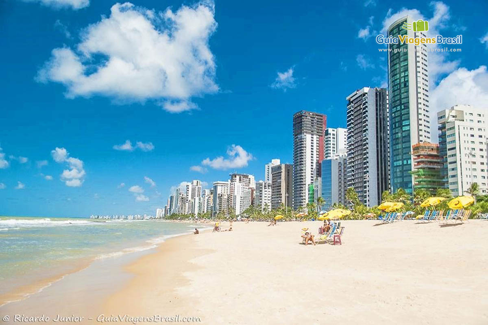
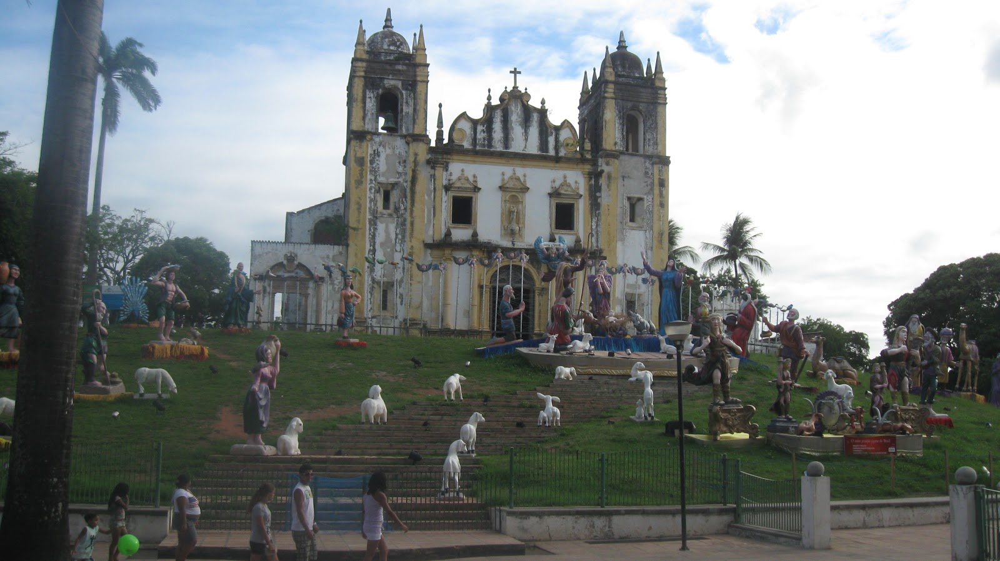

Pontos Turisticos
Praias
Pria da Boa Viagem
A Praia de Boa Viagem é a mais famosa de toda a cidade, até por ser um dos cartões postais da região. Ela tem uma ótima estrutura para o turista e ainda é bastante movimentada.
Igrejas
Mosteiro de São Bento
O Mosteiro de São Bento encontra-se localizado no alto de uma colina, no Sítio Histórico de Olinda, tendo em seu entorno uma exuberante paisagem natural. A proximidade com o mar e a posição estratégica em relação ao desenho urbano português permite ao visitante uma perspectiva pitoresca da paisagem singular de Olinda. O casario que compõe uma das visadas da fachada principal do templo, tendo o céu e o mar como fundos de um quadro, fazem desse cenário um exemplo raro no nordeste brasileiro.
